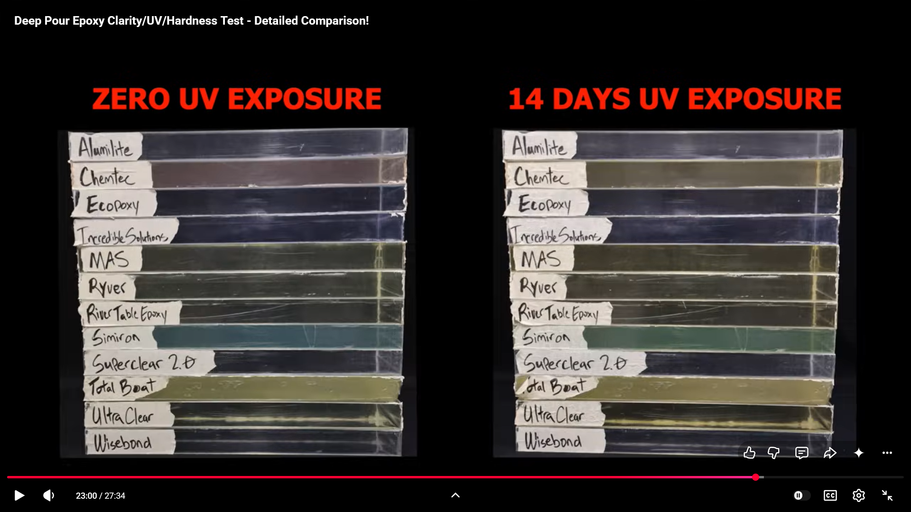

A Research-Bot field guide for developing a clear-epoxy sculpture product — copper-wire or botanical “tree” with integrated LEDs — covering architecture choices, what to buy for a first prototype, pour chemistry (including UV yellowing), and a step-by-step make process.
Compiled July 2026; yellowing + pricing updated same day from Deep Pour Epoxy Clarity/UV/Hardness Test. US DIY / Amazon / craft-store centric. Self-contained; no prior context required.
You want to develop a product that is essentially a light-up tree encased in epoxy: a tree form (most commonly a copper-wire bonsai sculpture, sometimes a dried botanical branch) illuminated by LEDs, with clear epoxy resin either holding the base or fully encapsulating the piece so it reads as a glowing glass-like object.[1][2][3]
This report aims to:
Full encasement = night-light block aesthetic, higher resin cost, more heat/bubble risk. Base-only = classic wire bonsai look, less resin, branches exposed to dust/oxidation.
Copper wire is repeatable and dry. Real twigs/flowers must be fully dry (moisture causes cloudiness and cure failure).[9]
Option A: LEDs woven into branches (tree itself glows). Option B: clear cast sits on a USB LED wooden base (Hobby Lobby / Amazon kits) — tree is silhouette-lit from below.[10]
If any outdoor / sunny-window placement is intended, yellowing becomes a first-class design constraint — and you likely need UV topcoat + tempered expectations.[7][11]
Battery = gift-friendly, replaceable. USB = brighter / always-on. Never bury a battery pack inside epoxy.[2][12]
Resin volume (and cost) scales with the cube of linear size. A ~3" cylinder night light is a cheap learning mold; a 6–8" desk sculpture is a different materials budget.
Theoretical: Polymer photodegradation is chemistry + environment. No consumer epoxy is permanently immune to yellowing under UV; additives (UV absorbers, HALS) only slow the process.[7][8][13] “Best brand” rankings from one creator’s sun test are useful but not lab-grade ASTM weathering.
Product definition incomplete: Exact tree height, mold shape, retail price target, and indoor vs window display were not specified. This report designs for a sensible MVP (desk-scale cylinder / cube, indoor).
Yellowing evidence: Primary ranking is one creator’s 14-day UV exposure comparison of 12 deep-pour brands (video), not a multi-year ASTM weathering study. Prices in §7 are street/MSRP snapshots (July 2026) and move with sales/shipping.
Not engineering / not SDS legal advice: Follow your resin’s Safety Data Sheet for PPE and ventilation. Retail prices shift weekly; treat dollar ranges as planning bands, not quotes.
Field maturity: Epoxy chemistry is a mature industrial field (1940s onward); craft “art resin” marketing is a younger consumer layer. Independent yellowing tests exist but are fragmented across hobby blogs, YouTubers, and manufacturer Atlas-lab claims.[8][14][15]
Modern epoxy resins grew out of mid-20th-century industrial chemistry (bisphenol-A / epichlorohydrin systems and amine hardeners). They became structural adhesives, coatings, and composites materials because the cured network is tough, bonds well, and can be optically clear.[16] Clear casting and “river table” deep-pour formulas are later specializations: slower hardeners, lower viscosity, and controlled exotherm so thick sections do not cook themselves.[5][6][17]
Aromatic epoxy networks absorb UV; oxidation creates chromophores that read as yellow/amber. Stabilizer packages (UV absorbers + hindered amine light stabilizers / HALS) delay visible change but do not grant immortality.[7][8][13] Thick pours that overheat during cure can yellow even without sun — heat is its own aging accelerator.[17][18]
Twisting copper (or silver-plated copper) into bonsai-like trees is a established craft and small Etsy product category. Trees are often mounted on driftwood or stone with adhesive or a shallow resin “soil” pour; bead foliage is common on finer work.[1][19][20]
Discrete LEDs have long been factory-potted in epoxy for durability. Hobbyists reverse that idea: embed low-heat LED strands or individual LEDs in craft resin for night lights and lamps. Best practice across craft and maker guides: use LEDs (not incandescent), keep power packs outside the pour, test before casting, and pour in layers when depth exceeds the resin’s rating.[2][3][12][21]
| Architecture | What the customer sees | Pros | Cons | Best first prototype? |
|---|---|---|---|---|
| A. Full encasement recommended MVP |
Tree + lights frozen in a clear glass-like block/cylinder | Matches “encased in epoxy”; premium look; dust-proof branches | Most resin; exotherm/bubble risk; power exit must be designed | Yes — if that phrase is the brand promise |
| B. Base pour only | Wire tree standing free; roots set in epoxy “ground” with stones | Less resin; classic bonsai look; easier repairs | Not fully encased; copper can dull; lights harder to hide | Good alternate if you want lower COGS |
| C. Clear cast on lit pedestal | Opaque or clear tree form; USB wood base shines light up through resin | Kits exist; no buried wiring; easy SKU | Light is under the tree, not in the canopy; less unique | Fastest learning project, weakest “product DNA” |
Product subject: Book of Mormon Tree of Life (Lehi’s dream). Fruit LEDs map cleanly to the white fruit; the iron rod and path favor a slab / plaque over a round centerpiece. Full comparison, symbolism notes, physical mockup steps, and SVG files live in the companion report:
tree-of-life-form-comparison.html — slab vs cylinder matrix + mockups
| Slab / plaque | Cylinder / centerpiece | |
|---|---|---|
| Dream readability | Path + iron rod + tree + optional river/building | Tree + fruit primarily; rod as accent only |
| Room role | Wall / shelf art | Table lamp object |
| First pour risk | Shallower → cooler cure | Taller mass → watch layer depth |
| Lean | Mock both in cardboard; pour slab first if you want the full Lehi scene. Keep cylinder as a second SKU if the dark-room glow wins. | |
Primary source: Deep Pour Epoxy Clarity/UV/Hardness Test — Detailed Comparison! (timestamp ~23:00 in screenshot). Side-by-side cured bars: zero UV vs 14 days UV exposure. These are deep-pour / casting brands — the correct product class for an encased tree block.[28]
User ranking of the clear survivors (top → bottom priority): Wisebond & Superclear 2.0 (top 2), then Incredible Solutions, Alumilite, Ecopoxy.

Screenshot from youtube.com/watch?v=aEoMvZe8KQ8 (~23:00) — left stack: zero UV; right stack: 14 days UV. File: resin-comparison-uv-14-days.png.
| Brand (as labeled) | After 14 days UV (visual) | Role for this product |
|---|---|---|
| Wisebond | Stays crystal clear | Top pick — deep pour + UV survivor |
| Superclear 2.0 | Stays crystal clear | Tied top pick — often deeper max pour (2–4") |
| Ecopoxy | Stays crystal clear | Top 5 — note shallower typical max layer (~½–1½" FlowCast) |
| Incredible Solutions | Stays crystal clear | Top 5 — now often sold as Promise Epoxy / Pourable Plastic |
| Alumilite | Essentially clear (minimal change) | Top 5 — best small starter kit (24 oz) |
| Simiron | Blue/teal tint both before & after (not a clear “glass” candidate) | Skip for crystal tree block |
| Chemtec, MAS, Ryver, River Table Epoxy, Total Boat, UltraClear | Clear yellowing / browning or already amber at day 0 | Avoid for clear encasement SKUs |
Manufacturer and independent sources agree: all common epoxies will eventually yellow under enough UV / heat; “non-yellowing” means “much slower,” not “never.” HALS + UV absorbers delay the change.[7][8][13] A 14-day accelerated UV stack is a strong short-cycle screen among deep-pour brands; it is not a 5-year windowsill guarantee.[28]
Buy from the clear survivors in this deep-pour test — not from coating-resin yellowing winners. ArtResin-class systems can look great in jewelry/windowsill tests but max out around ⅛–¼" per layer; pouring them deep risks exotherm, cracks, and heat-yellowing.[4][5][17]
Default buy: Wisebond or Superclear 2.0 Liquid Glass for production-scale kits; Alumilite Amazing Deep Pour 24 oz if you only want enough resin for 1–2 mini prototypes without a gallon commitment. See §7 prices.
Street/MSRP snapshots researched July 2026 (USD, before tax/shipping). Compare apples-to-apples on ~1.5 gal mixed kit where possible; Alumilite’s 24 oz row is the prototype-size exception. $/gal = kit price ÷ mixed gallons.
| Rank (UV clarity) | Brand / product | Kit size | Typical price | ≈ $/gal mixed | Max pour (mfr.) | Notes |
|---|---|---|---|---|---|---|
| 1 (tie) | Wisebond Deep Pour | 0.75 gal 1.5 gal |
$90 $145 |
~$120 ~$97 |
2" (to 8" object casting w/ layers) | Direct from wisebond.com / Home Depot / Woodcraft at $145 for 1.5 gal.[29][30] Consistent MSRP. 2:1 mix. |
| 1 (tie) | Superclear 2.0 Liquid Glass | 1.5 gal 3 gal |
$94–$140 $290–$310 |
~$63–$93 ~$97–$103 |
2–4" (conditions dependent) | Dealer spread is wide: promotional dealers ~$94; Bear Hollow ~$140; Home Depot 3 gal ~$310.[31][32][33] Best price/gal if you catch a sale. 2:1 mix. |
| 3 | Incredible Solutions → Promise Epoxy Pourable Plastic | 1.5 gal 3 gal |
~$109 ~$191 |
~$73 ~$64 |
~2" | Rebranded; Walmart listing ~$109 / 1.5 gal (sale-sensitive).[34] Often cheapest of the clear pack. 2:1 mix. |
| 4 | Alumilite Amazing Deep Pour | 24 fl oz 1.5 gal 3 gal |
$52 $193 $385 |
~$277 ~$129 ~$128 |
2" per layer | Official alumilite.com prices.[35] 24 oz is the smart first-prototype buy despite high $/gal. Large kits are pricier than Wisebond/Superclear. |
| 5 | EcoPoxy FlowCast | 6 L (~1.59 gal) 12 L |
$150 $250 |
~$94 ~$79 |
½–1½" per layer | Manufacturer list ~$150 for 6 L.[36] Bio-based marketing; shallower max pour than Wisebond/Superclear — more layers for a tall cylinder. |
Prices are approximate US online / big-box bands as of mid-2026 research; buy what matches your chosen architecture. Start with Cart 1.
Goal: one small glowing tree-in-a-block you can demold, plug in, and photograph.
| Item | Spec / notes | Approx. | Why |
|---|---|---|---|
| Deep-pour / casting epoxy kit | Wisebond or Superclear 2.0 (top UV). Prototype starter: Alumilite Amazing Deep Pour 24 oz (~$52). See §7 price table. Aim ≥1–2" pour depth on TDS.[28][29][35] | $52 (24 oz) or $90–$145 (0.75–1.5 gal) | Thick clear encasement; UV survivors from the 12-brand test |
| Silicone mold | Cylinder or cube night-light mold (~2–3.5"). Hobby Lobby / Amazon “cylinder light silicone mold” kits exist[10] | $12–25 | Reusable, smooth demold |
| Copper wire | 20–24 AWG bare or enameled copper; 1 small spool is enough for a mini tree[1][19] | $8–15 | Trunk / branches |
| Micro LED fairy strand | Silver-wire or copper-wire micro LEDs, warm white or RGB; battery pack or USB — pack stays outside[2][12][21] | $8–18 | Light without custom soldering (v1) |
| Mixing supplies | Graduated cups, stir sticks, digital scale (preferred for 2:1 resins) | $10–25 | Ratio accuracy = cure quality |
| PPE | Nitrile gloves, safety glasses, respirator with organic-vapor cartridges if vent is poor; cover clothes[21][24] | $15–40 | Epoxy sensitizes skin; fumes matter |
| Bubble control | Small heat gun or butane torch (wave, don’t roast); optional toothpick | $15–35 | Surface bubbles after pour |
| Level workspace cover | Silicone mat or plastic sheeting; level table | $5–20 | Leaks and dust are the silent killers |
| Optional: mold release | For non-silicone molds only | $8–12 | Skip if using silicone |
| Optional: UV clear spray / varnish | For window-adjacent display pieces[11] | $10–20 | Extra yellowing delay |
MVP cart total (rough): ~$100–220 with Alumilite 24 oz; ~$160–280 if you jump straight to a Wisebond/Superclear 1.5 gal kit — plus PPE / heat gun if you don’t already own them.
| Item | When to add | Approx. |
|---|---|---|
| Individual 3mm LEDs + thin silicone wire + resistors + soldering kit + heat-shrink | When fairy-light look is too “Christmas string” and you want canopy points of light[3][25] | $25–60 |
| Seed beads / glass leaves for foliage | Wire bonsai product language[20] | $5–15 |
| Transparent resin dye / alcohol ink (very sparse) | Subtle tint; too much kills “glass” look[21] | $8–15 |
| Wet-sand papers (400→3000) + polishing compound / plastic polish | If mold seams need finishing | $15–30 |
| HDPE / melamine + hot glue (custom mold) | When silicone sizes don’t match product dimensions[21] | $20–40 |
| USB wooden LED base (kit) | Architecture C experiments / gift SKU[10] | $12–25 |
Pick a mold you can fill with roughly 200–500 ml of mixed resin for the first piece. Adafruit’s resin lamp guidance: fill the mold with water to the target height, pour that water into a measuring cup — that volume is your mixed-resin target.[21]
Power the strand for a long enough soak that you’d notice flicker or a dead LED. Fix now; you cannot rework buried joints after a clear pour.[2][12]
| Symptom | Likely cause | Fix next time |
|---|---|---|
| Cracks, smoke, amber “cooked” zone | Pour too deep / room too warm / coating resin used as casting[17][18] | Deep-pour formula; thinner layers; cooler room |
| Cloudy / milky cast | Moisture in embeds; whipped bubbles; incomplete mix[9][21] | Dry materials; slow stir; longer rest before pour |
| Sticky / soft spots | Bad ratio or unmixed walls of cup[21] | Scale + scrape; discard suspect mix |
| Dead LED after cure | Joint failure, heat damage, short | Heat-shrink joints; longer pre-test; lower-power LEDs[3][12] |
| Yellowing in weeks near window | UV + possibly heat-aged pour[7][28] | Switch to Wisebond/Superclear-class; UV topcoat; market as indoor |
| Visible pour lines | Fully cured between layers without bonding prep | Pour next layer in manufacturer’s recoat window, or light sand between full cures[5] |
Freeze wire gauge, strand count, LED SKU, mold SKU, and resin SKU (Wisebond or Superclear 2.0 — pick one). Variation kills margin and photos.
USB-C / USB-A with tidy strain relief at the exit looks more “product” than a dangling coin-cell pack — but batteries ship easier. Pick one.
Honest copy: indoor decorative object; avoid prolonged direct sun. Do not promise never-yellow.
Resin volume dominates. Small molds win until demand justifies gallon kits and custom molds.
If selling electrically lit goods at scale, research labeling, battery shipping, and low-voltage product norms for your sales channel — out of scope for this make guide.
Canopy LED placement, tint, and tree silhouette are the brand — commodity cylinder molds are everywhere.[10]
A light-up epoxy tree is a real, makeable product at craft scale: twist a copper tree, weave in low-heat micro-LEDs, cast in a UV-stable deep-pour epoxy inside a silicone mold, keep the power pack outside, and sell it as an indoor glowing object.
Resin lock (from 12-brand UV test): Wisebond or Superclear 2.0 first; Incredible Solutions / Promise, Alumilite, and EcoPoxy as clear backups. Alumilite 24 oz (~$52) for the first pour; Wisebond 1.5 gal ($145) or a deal on Superclear 1.5 gal (~$94–$140) when you scale.
Also buy: silicone cylinder/cube mold + 20–24 AWG copper + micro-LED strand + mixing cups/scale + PPE + heat gun.
resin-comparison-uv-14-days.png.